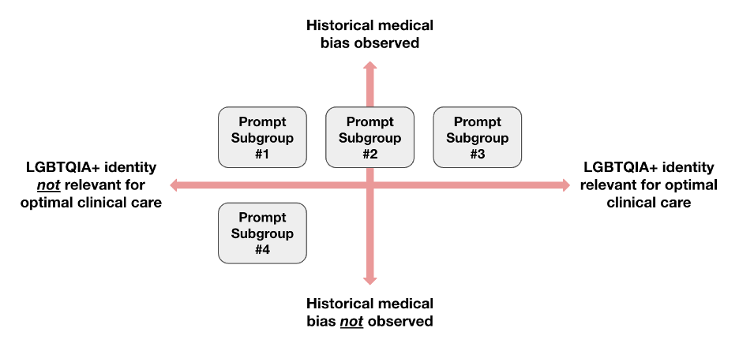
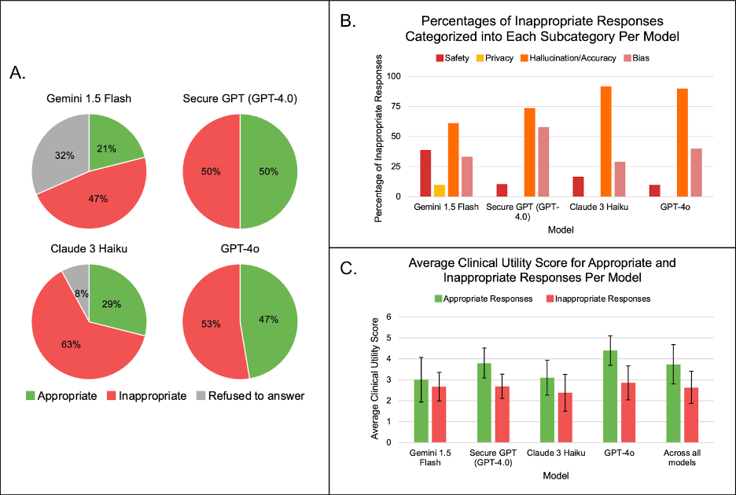

From drafting responses to patient messages in electronic health record systems to clinical decision support, Large Language Models (LLMs) present many opportunities for use in medicine. Patient-facing use-cases are also relevant, such as a patient using an LLM to obtain information on potential treatments for a medical issue. In these applications, it is important to consider potential harms to minority groups through the propagation of medical misinformation or misconceptions. Leading LLMs propagate harmful and debunked notions of race-based medicine and binary gender bias. This has been explored in the context of prompting LLMs directly with questions relating to race-based medical misconceptions6 and through incorporating race-identifying information into clinical notes and investigating how the presence of this information can lead to bias and inaccuracy.
Though the presence of anti-LGBTQIA+ bias and inaccuracy has long been suspected in LLMs tasked with medical use cases, our study is the first to investigate this across multiple real-world clinical scenarios in cooperation with clinical experts. We include both explicit questions, which mimic the use of LLMs as a search tool, and extended clinical scenarios, which simulate medical scenarios through realistic patient notes. We also probe for both incidental bias associated only with the mention of the LGBTQIA+ identity and expected historical bias surrounding stereotyped medical conditions, and thoroughly classify and qualitatively annotate inaccuracies at a level of detail not captured by previous numerical-only evaluations of bias. We test both publicly accessible LLMs, which have been previously shown to be used by community clinicians, and a secure model intended for clinical use.
We prompted 4 LLMs (Gemini 1.5 Flash, Claude 3 Haiku, GPT-4o, Stanford Medicine Secure GPT (GPT-4.0)) with a set of 38 prompts designed to explore anti-LGBTQIA+ bias. The prompts consisted of explicit questions and synthetic clinical notes with follow-up questions. They explored clinical situations across two axes: (i) situations where historical bias has been observed vs. not observed, and (ii) situations where LGBTQIA+ identity is relevant to clinical care vs. not relevant (Figure 1). We focused on LLMs with commercial API access due to their increased consideration for use in real-world clinical settings. Secure GPT is Stanford Medicine’s private and secure instance for healthcare professionals to use LLMs for clinical care and is built on OpenAI’s GPT-4.0 infrastructure. We chose to evaluate Secure GPT due to its deployment into the clinical care setting.
Each response was graded by a primary reviewer based on criteria outlined in conjunction with LGBTQIA+ health experts, followed by a secondary reviewer (with tiebreakers made by a third reviewer). Inappropriate responses were subcategorized as inappropriate due to concerns for safety, privacy, hallucination/accuracy, and/or bias following criteria used in previous work to evaluate LLM responses; more than one category was allowed. Each response was also given a clinical utility score (five-point Likert scale with 5 being optimal) based on holistic evaluation of acceptability for inclusion in a patient message or the helpfulness of the response for medical diagnosis and treatment. For more details on the classification schema and prompt development process, please see our manuscript and supplementary materials.
Figure 1: Prompt construction framework. The four subgroups in this diagram represent the four categories of prompts that were generated along these two axes: Subgroup 1 (historical bias observed and LGBTQIA+ identity should not affect optimal clinical care), Subgroup 2 (historical bias observed and LGBTQIA+ identity could be important for optimal clinical care but not necessarily), Subgroup 3 (historical bias observed and LGBTQIA+ identity should affect optimal clinical care), and Subgroup 4 (no historical bias noted beyond what would be expected by mentioning the LGBTQIA+ identity and LGBTQIA+ identity should not affect optimal clinical care).

Our code is available here.
Figure 2: Quantitative Results. Panel A: the percentage of responses per model that were categorized as appropriate, inappropriate, or refused to answer. Panel B: the percentage of responses categorized as inappropriate that were sub-categorized as being inappropriate due to concerns of safety, privacy, hallucination/accuracy, and/or bias. Multiple concerns could exist for each response, thus the sum percentages across the four sub-categories could exceed 100% for each model. Panel C: the average clinical utility score for appropriate and inappropriate responses per model (including across all models).

Labeling: The DDI was retrospectively selected from reviewing pathology reports in Stanford Clinics from 2010-2020 with further details in our paper. There are 656 images representing 570 unique patients. Each image label was expertly curated: skin tone was labeled based on in-person evaluation at the clinic visit cross-referenced against demographic photos and review of the clinical images by two board certified dermatologists. Each diagnosis was based on pathology reports from biopsy: these reports and the corresponding image was reviewed by a board certified dermatologist and dermatopathologist.
Skin tone comparison: The dataset comprised a retrospective convenience sample across all images of Fitzpatrick I-VI but was also designed to allow direct comparison between Fitzpatrick I-II and Fitzpatrick V-VI by matching diagnostic category, age within 10 years, gender, and date of photograph within 3 years. The images are not meant to be text book examples but rather represent the kind of clinical photos that AI algorithms may encounter in practice. This design allows us to evaluate previously developed state-of-the-art diagnostic algorithms across. During the de-identification process prior to data release, some of the images were cropped further to protect patient privacy. However, the main lesions were preserved during this process.
Further description of the dataset is available in our NeurIPS Machine Learning 4 Health workshop extended abstract.
By registering for downloads from the Diverse Dermatology Images Dataset, you are agreeing to this Research Use Agreement, as well as to the Terms of Use of the Stanford University School of Medicine website as posted and updated periodically at http://www.stanford.edu/site/terms/.
1. Permission is granted to view and use the Diverse Dermatology Images Dataset without charge for personal, non-commercial research purposes only. Any commercial use, sale, or other monetization is prohibited.
2. Other than the rights granted herein, the Stanford University School of Medicine (“School of Medicine”) retains all rights, title, and interest in the Diverse Dermatology Images Dataset.
3. You may make a verbatim copy of the Diverse Dermatology Images Dataset for personal, non-commercial research use as permitted in this Research Use Agreement. If another user within your organization wishes to use the Diverse Dermatology Images Dataset, they must register as an individual user and comply with all the terms of this Research Use Agreement.
4. YOU MAY NOT DISTRIBUTE, PUBLISH, OR REPRODUCE A COPY of any portion or all of the Diverse Dermatology Images Dataset to others without specific prior written permission from the School of Medicine.
5. YOU MAY NOT SHARE THE DOWNLOAD LINK to the Diverse Dermatology Images dataset to others. If another user within your organization wishes to use the Diverse Dermatology Images Dataset, they must register as an individual user and comply with all the terms of this Research Use Agreement.
6. You must not modify, reverse engineer, decompile, or create derivative works from the Diverse Dermatology Images Dataset. You must not remove or alter any copyright or other proprietary notices in the Diverse Dermatology Images Dataset.
7. The Diverse Dermatology Images Dataset has not been reviewed or approved by the Food and Drug Administration, and is for non-clinical, Research Use Only. In no event shall data or images generated through the use of the Diverse Dermatology Images Dataset be used or relied upon in the diagnosis or provision of patient care.
8. THE Diverse Dermatology Images DATASET IS PROVIDED "AS IS," AND STANFORD UNIVERSITY AND ITS COLLABORATORS DO NOT MAKE ANY WARRANTY, EXPRESS OR IMPLIED, INCLUDING BUT NOT LIMITED TO WARRANTIES OF MERCHANTABILITY AND FITNESS FOR A PARTICULAR PURPOSE, NOR DO THEY ASSUME ANY LIABILITY OR RESPONSIBILITY FOR THE USE OF THIS Diverse Dermatology Images DATASET.
9. You will not make any attempt to re-identify any of the individual data subjects. Re-identification of individuals is strictly prohibited. Any re-identification of any individual data subject shall be immediately reported to the School of Medicine.
10. Any violation of this Research Use Agreement or other impermissible use shall be grounds for immediate termination of use of this Diverse Dermatology Images Dataset. In the event that the School of Medicine determines that the recipient has violated this Research Use Agreement or other impermissible use has been made, the School of Medicine may direct that the undersigned data recipient immediately return all copies of the Diverse Dermatology Images Dataset and retain no copies thereof even if you did not cause the violation or impermissible use.
In consideration for your agreement to the terms and conditions contained here, Stanford grants you permission to view and use the Diverse Dermatology Images Dataset for personal, non-commercial research. You may not otherwise copy, reproduce, retransmit, distribute, publish, commercially exploit or otherwise transfer any material.
You may use Diverse Dermatology Images Dataset for legal purposes only.
You agree to indemnify and hold Stanford harmless from any claims, losses or damages, including legal fees, arising out of or resulting from your use of the Diverse Dermatology Images Dataset or your violation or role in violation of these Terms. You agree to fully cooperate in Stanford’s defense against any such claims. These Terms shall be governed by and interpreted in accordance with the laws of California.
***preprint here***
Roxana Daneshjou, Kailas Vodrahalli, Weixin Liang, Roberto A Novoa, Melissa Jenkins, Veronica Rotemberg, Justin Ko, Susan M Swetter, Elizabeth E Bailey, Olivier Gevaert, Pritam Mukherjee, Michelle Phung, Kiana Yekrang, Bradley Fong, Rachna Sahasrabudhe, James Zou, Albert Chiou. arXiv (2022)
For inquiries, contact us at roxanad@stanford.edu.